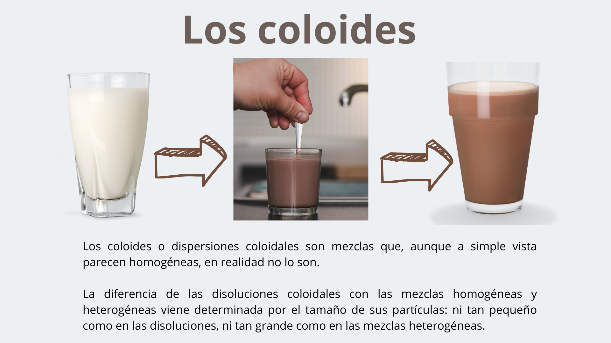

Actividad 7
Hemos hablado sobre cómo la leche puede cambiar. Pero, ¿qué es exactamente una sustancia? ¿Es lo mismo una sustancia pura que una mezcla?
Hemos hablado sobre cómo la leche puede cambiar. Pero, ¿qué es exactamente una sustancia? ¿Es lo mismo una sustancia pura que una mezcla?
Los alimentos están compuestos de distintas sustancias. Algunos son sustancias puras, otros son mezclas homogéneas y otros son mezclas heterogéneas.
Arrastra cada alimento hasta su contenedor.
Pista: La leche y el yogur pueden parecer uniformes, pero si los observas de cerca, ¿son realmente homogéneos?
¿Qué podríais hacer para clasificar correctamente los alimentos en cada grupo?

Las dispersiones o disoluciones coloidales son un tipo de mezcla heterogénea cuyas partículas de soluto son invisibles a simple vista porque tienen un tamaño intermedio entre el de las disoluciones y el de las mezclas heterogéneas.
Una forma fácil de distinguirlas consiste en hacer pasar el haz de un láser a través de ellas. En una disolución no veremos el haz, en cambio en una dispersión coloidal si lo veremos. Este fenómeno se conoce como efecto Tyndall.
Cuando consumimos alimentos como la leche, la mayonesa o una gelatina, estamos interactuando con coloides. Estos sistemas están formados por partículas diminutas (fase dispersa) distribuidas uniformemente en otra sustancia (fase continua). Gracias a las propiedades coloidales, los alimentos pueden tener diferentes texturas, estabilidad y apariencia.
¿Cómo se clasifican los coloides?
Los coloides en los alimentos pueden clasificarse de distintas maneras:
Según su interacción con el agua:
Según su estructura:
Tipos de coloides en los alimentos
Cuando bates clara de huevo para hacer un merengue, ¿qué tipo de coloide estás formando?
La leche es una emulsión natural. ¿Qué crees que pasaría si no estuviera homogeneizada?
Observa un yogur en casa: ¿su textura es similar a la de la leche o más parecida a la gelatina? ¿A qué tipo de coloide crees que pertenece?
Obra publicada con Licencia Creative Commons Reconocimiento Compartir igual 4.0
{kind=link}
{kind=link}
{kind=link}
{kind=link}
{kind=link}
{kind=link}